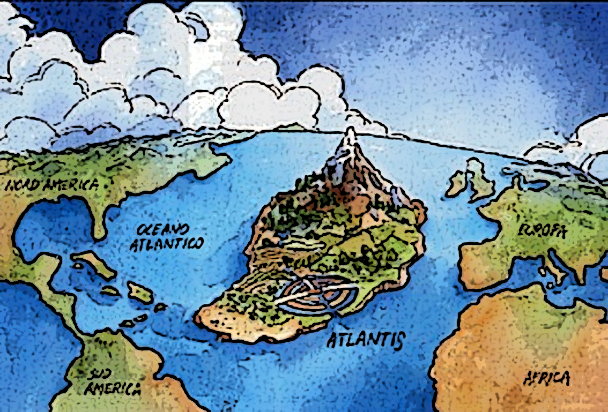
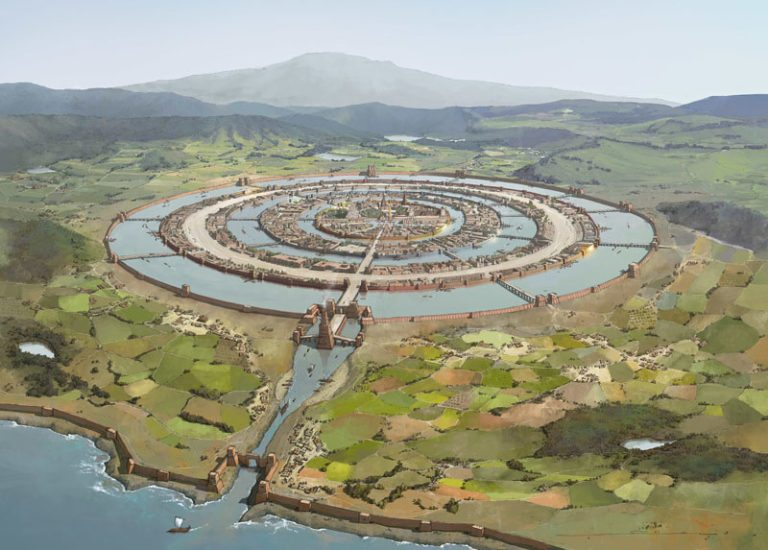

En lo relativo al lugar donde se podría localizar la Atlántida, o cuál sería la isla en la que se inspiró Platón para la descripción geográfica y orográfica de dicha civilización, el debate ya es otro cantar. En torno a esta cuestión, las hipótesis se multiplican. De hecho, a lo largo de la historia prácticamente cualquier isla de un tamaño decoroso –recordemos que Platón la describe como del tamaño de Asia y Libia, y que, aunque le concedamos el beneficio de la exageración, habrá que suponer que debería tener un tamaño “mínimo”– ha sido propuesta, con mayor o menor fortuna, como una posible ubicación.


Dado que Platón la localiza frente a los pilares de Heracles –que, según la tesis más aceptada, se corresponden con las dos márgenes del estrecho de Gibraltar–, se llevan la palma las islas mediterráneas y las situadas en la región del océano Atlántico próxima a dicho estrecho. A favor de las primeras juega el factor “proximidad”, puesto que Platón vivía en Grecia y le era más fácil conocer las ínsulas más cercanas. Y a favor de las segundas, que el sabio se refiere a una isla situada en el Atlántico.